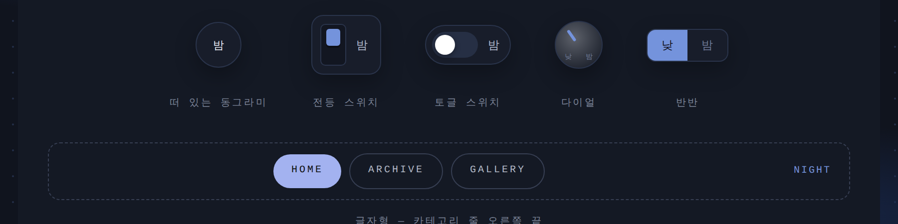

러브로그 · 꾸미기
🌗 듀얼 테마
한 홈에 두 가지 모습(A/B)을 담아 두고 방문자가 전환 버튼으로 오갑니다.
- 꾸미기의 〈🌗 듀얼〉 탭에서 켜고, 전환 버튼 모양(떠 있는 동그라미·전등 스위치·카테고리 줄 글자)과 위치를 고릅니다.
- 지금 모습을 [A로 담기].
- 배경·색 등을 바꿔 [B로 담기].
- 모드 이름과 버튼 문구를 정합니다(아침/밤, 평상시/이벤트 등 자유).
담기는 것은 색·배경·글꼴·모서리·효과·스티커·헤더 색. 사진·하단 스트립·위젯 구성은 체크로 더 담을 수 있어요(체크를 바꾸면 A·B를 다시 담아야 함). 방문자의 선택은 기기에 기억됩니다.

사진 자리img/ll-dual.png